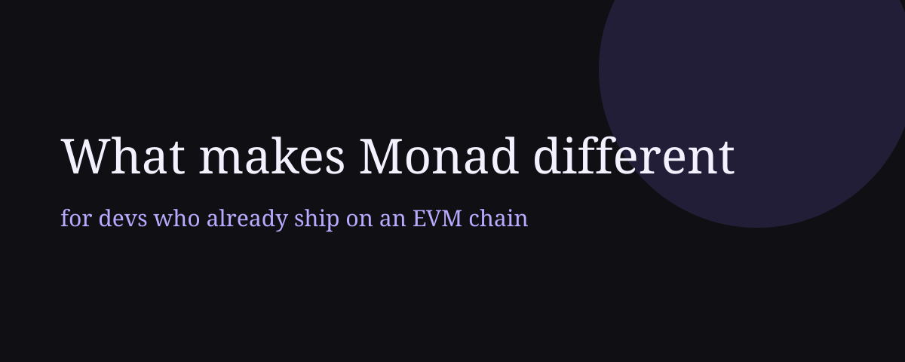

What makes Monad different

I keep getting the following question from people on every Blitz I do: “What makes Monad different?” and I want to answer it in this article.
I work at Monad, grain of salt and all that. This is the answer I give when someone who already ships on an EVM chain asks me that question. Read along.
Same code, so what changed
I understand why people ask this question. When you deploy a contract on Monad, everything is the same. You use the same foundry, the same viem/wagmi, and you deploy the same bytecode. So from a higher level nothing is really different, and from that viewpoint i understand the validity of this question.
What changed is the machine running that bytecode. The Monad client was written from scratch. It executes transactions in parallel and you don’t even need to know it. It just watches what each transaction reads and re-runs the ones that conflicted. The state is stored in MonadDb. Most Ethereum clients keep the Merkle Patricia trie inside a generic key-value database such as LevelDB or RocksDB, so one data structure ends up embedded in another; MonadDb implements the Patricia trie directly, both on disk and in memory. And the consensus finalizes a block in two 300ms slots with around 200 validators voting on it. And the best thing here is that you don’t need to know what’s happening behind the scenes.
A note: I will be linking as many terms as I can out of this article to the relevant pages that explain them, so do not expect a linear read, feel free to jump between pages.
whymonad.com
I made a site for this question a while ago: whymonad.com. I was tired of saying “parallel EVM, 10k TPS, 300ms blocks” and watching people nod and forget it. As far as I can tell, numbers by themselves don’t make anyone switch chains; people switch when they try to build something and it doesn’t work where they are. So the site takes three situations like that and plays them out on Ethereum, Solana, Arbitrum and Monad at the same time, with the same users.
The site shows what happens in each case. The why is in the docs, and I’ve linked the relevant pages as I go.
A stablecoin breaks its peg
Suppose a stablecoin drops to $0.97. Half a million people now want out before it drops further, and the site shows the first 70 of them trying on each chain.
On Ethereum they queue and fees go up, because sequential execution and a generic state database cap the chain at about 15 transactions a second, and better hardware doesn’t change that. On Solana execution is fast, but the exit you built for the EVM doesn’t exist there. Solana has also gone down under this kind of load before, 17 hours in 2021 from a bot flood. On Arbitrum things are cheap and you get a soft confirmation in about 2 seconds. But it all goes through one sequencer, and if you want to actually leave to L1 that takes about 7 days.
On Monad everyone is out in under a second, and the reason is MonadBFT: a block is proposed, voted on in the next 300ms slot, and final one slot after that, so 600ms in total, and this is a protocol guarantee. On an optimistic L2 the 200ms confirmation you show your user is the sequencer telling you what it plans to do, and the settlement that would let you hold it to that is a week away on Ethereum. On Monad there is no sequencer, so there is nothing upstream that can reorder or undo the transaction once it’s final. And there are about 200 validators voting on it, which an L2 with one sequencer doesn’t have.
This does cost something. A Monad full node wants 16 cores, 32 GB of RAM and two 2 TB NVMe drives, about four times the CPU and bandwidth of an Ethereum full node. I’d rather tell you here than have you find it on the hardware requirements page.
A consumer app goes viral
Now consider the opposite situation, which is the day every consumer app is hoping for. A claim or a ticket drop or a game item blows up on social and wallets start signing all at once. Where can that land so that the users who showed up can actually complete the action?
On Ethereum the launch gets expensive. A big claim turns blockspace into the product experience. People wait, retry, or decide it’s not worth the fee, and the ones who leave are the ones you wanted. On Solana fees are fine, but you can’t bring your contracts, so first you port. On a rollup the claim feels cheap and fast, which is real, and then the user asks how to move their thing somewhere else and you’re explaining bridges.
On Monad the demand clears without leaving the EVM, mainly because there is a lot more room: the chain does 500M gas per second (150M per block, every 300ms) where Ethereum does 2.5M, and a single transaction can spend 30M gas, which is an entire Ethereum block. A transfer is about 0.0021 MON, a swap about 0.02 MON. The base fee rises slowly and falls fast, so a spike raises fees gradually. And the contract taking all this is the same bytecode you already had, so the people who come back tomorrow find the same contract at the same address.
Consumer apps are also the ones that run out of room in the contract. On Monad contracts can be 128 KB instead of 24 KB, so the diamond proxy you built to fit under EIP-170 is optional now. Memory is priced linearly up to 8 MB. A 1 MB allocation is about 16k gas on Monad and about 2.2M on Ethereum. I measured one of these for mipland: a storage scratchpad rewritten to use memory instead went from 2,420,884 gas to 57,003 on mainnet, and the transaction hash is on the site if you want to check.
A market moves before everyone can react
This has the same shape as the depeg, except there is money on both sides of it. The price breaks lower, liquidations fire around eight seconds in, arb spreads open up around twenty, and liquidators, arbitrageurs and market makers all hit the chain at once. Blockspace in those twenty seconds is worth more than at any other time, and transaction ordering decides who gets paid for it.
On Ethereum the liquidity is deep but it waits for blockspace. On Solana it’s fast, but it’s not the EVM liquidity that needs rebalancing. On a rollup execution is cheap, but ordering goes through the sequencer, so whoever runs the sequencer is in the trade.
On Monad two things carry this. The first is parallel execution, which means the liquidator and the arbitrageur don’t wait on each other unless they actually touch the same state, and if they do, the client notices and re-runs the later one. The second is ordering: inside a block it is the leader’s call, with a priority gas auction as the default, and there is no third-party block builder in the path. The consensus also has tail-fork resistance, meaning a leader cannot fork away the previous block to grab what was in it.
Fastlane just shipped the best example of this I’ve seen. Moose is a DEX aggregator that picks the route onchain, at execution time, from the price each route actually fills at, not the price it showed in simulation. Their words: it “doesn’t place a server between you and the blockchain,” so there’s no offchain quote for a market maker to spoof. You need the memory and contract limits from the last section and the execution from this one to write that.
The matrix
The bottom of the site is a table with six rows: EVM compatible, decentralized validator set, high sustained throughput, sub-second finality, low fees as activity rises, self-sufficient base chain. For any one row you can find a chain that passes it; the claim is that Monad passes all six. The site says this looks like marketing until you see the mechanisms, and I agree, so here they are.
First, parallel EVM execution on unchanged bytecode. Second, MonadDb, from above, which also uses async I/O so parallel reads don’t block each other. Third, pipelined consensus, so the slow steps overlap instead of running one after another. Fourth, finality two 300ms slots after proposal with a couple hundred validators, instead of one operator.
None of those can be added to an existing client later, which is why the site’s “why this matters” section comes down to two lines: existing apps move without a rewrite, and more things become buildable.
What will bite you on day one
If you port a working dapp to Monad, there are four things that break, and I’ll take them in the order you’ll hit them.
Gas is charged on the limit, not on usage. Consensus happens before execution, so when the chain charges you it doesn’t know yet how much gas you’ll use, and charging on usage would let someone set a huge limit, use almost none of it, and DOS the chain. So you pay gas_limit * price. This is fine until MetaMask sees a reverting eth_estimateGas and sets the limit to something absurd, and your user pays the absurd number. The fix is to set explicit gas limits in your app and never ship a wallet-estimated limit on a path that can revert.
There is no global mempool. Transactions go to the next three leaders, not to everyone. If your product watches pending transactions, to index them or show a “pending” state or front-run them, that doesn’t port. Use the monadNewHeads and monadLogs feeds instead, which tell you what consensus did with each block you’ve seen, so you don’t guess at reorgs.
Every account keeps a 10 MON reserve. A transaction that would take an EOA below 10 MON reverts. If the EOA is EIP-7702 delegated it reverts no matter what. Session key wallets and anything that sweeps an account to zero need a floor. No L2 has this and it’s the one I see people hit at hackathons.
Freshly funded accounts wait three blocks. Execution runs a few blocks behind consensus, so an account that just went from zero to funded can’t send until the funding transaction is three blocks deep. Your faucet-then-deploy script needs about 1.2 seconds of patience after the receipt, or one contract that funds and acts in the same call.
Also, full nodes don’t keep arbitrary historical state. Blocks, receipts, logs and traces are all there, but eth_getStorageAt on a block from last month needs the historical RPC. If your analytics need an archive node, budget for it.
The chain moves
Monad ships its own client and its own consensus, so protocol changes come as Monad Improvement Proposals every few months, and some change the gas schedule under you. MIP-8 went live in September and grouped storage into pages of 128 slots. A repeated write to a slot in a page you already touched is 100 gas now instead of 11,000. Arrays and structs get this for free; mappings don’t, because each key lands on its own page. No L2 has this, so read the spec before your next storage layout.
I built mipland.com because the specs are dense and I wanted somewhere you can click through what a MIP does to your gas before you sit down with the spec itself.
If you already ship on an EVM chain, run the three situations on whymonad.com with your own chain swapped in, then come back to the list of what breaks. Deploy the thing you already have, hit the reserve balance once, and tell me how it went in the Monad developer Discord or on Telegram.